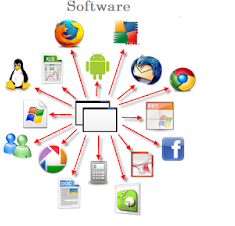

¿Qué es sotfware?
Es la parte intangible y la que nos permite interactuar con el hardware para poder utilizar un dispositivo de la forma que lo hacemos, cualquier tipo de aplicación informática, ya sea un programa de escritorio, un driver de una tarjeta de video o un sistema operativo. Todo lo que no podemos tocar de nuestra computadora (o de cualquier dispositivo en realidad) es el software.
El software es la parte lógica de un sistema y es, en conjunto con el hardware (que es la parte física) lo que nos permite utilizar un dispositivo electrónico determinado. Gracias al software es que este artículo pudo ser escrito, y también gracias a él es que lo estás leyendo (a no ser que estés leyendo en una hoja impresa claro).